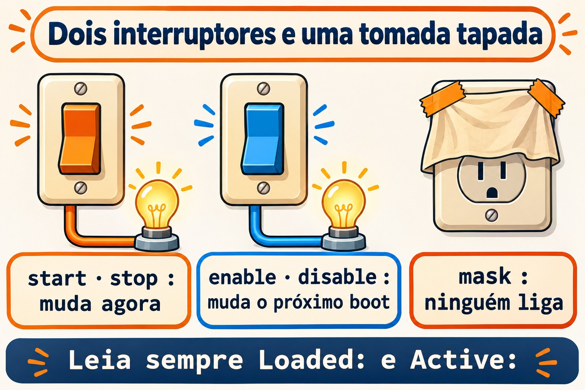
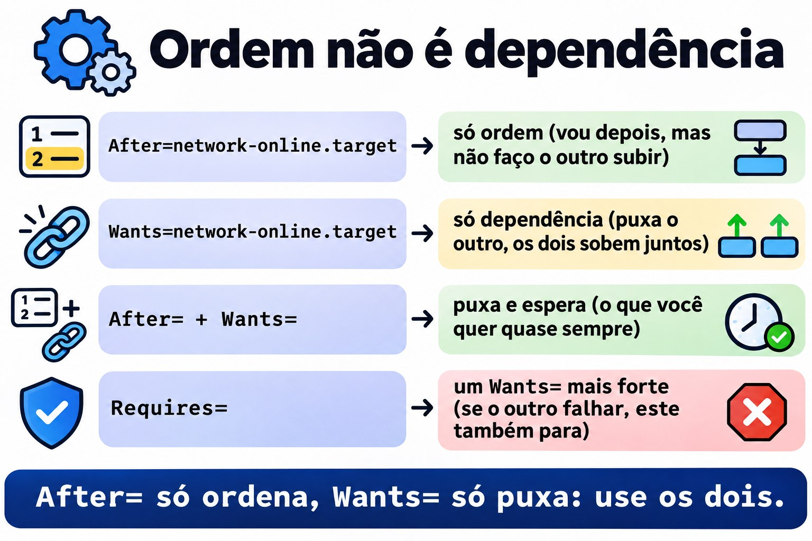
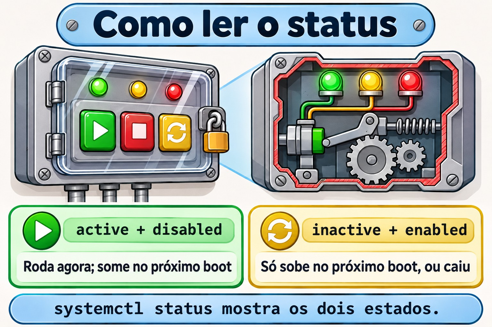

Aula 4.2 · systemd: serviços e units
Na 4.1 você viu o systemd chegar ao fim do boot. Hoje você manda nele: liga, desliga, põe para subir no boot, proíbe de subir, e muda o comportamento de um serviço sem tocar no arquivo do pacote. Quase todo chamado de servidor passa por aqui: "o serviço caiu", "não voltou depois do reboot", "preciso mudar um parâmetro". No Windows isso é o services.msc; no Linux são meia dúzia de comandos e dois diretórios.
Formato núcleo. O essencial para uma emergência sem internet, na mão. O resto está listado na seção 12, para puxar no DeepTutor.
| Ficha | Aula 4.2 |
|---|---|
| Módulo | M4 · Boot e systemd, aula 2 de 4 |
| Quando | Semana 8 |
| Ao final você consegue | Ler o systemctl status e separar o estado de agora do estado no boot; iniciar, parar, reiniciar e recarregar serviços; habilitar, desabilitar e mascarar; escrever um arquivo de unit simples; mudar um serviço com systemctl edit sem tocar no arquivo do pacote; achar a causa de um serviço que não sobe com status e journalctl -u |
| Pré-requisitos | Aula 4.1; Aula 3.5 (vim e sudoedit) |
| Tempo | Cerca de 1h30 |
| Snapshots | m4a2-inicio e m4a2-fim nas duas VMs |
1 · Aquecimento
Três perguntas, de cabeça. O Gabarito confere no fim.
- Palpite: qual é a diferença entre parar um serviço e desabilitar um serviço?
- Você mudou uma linha no arquivo do serviço do SSH, em
/usr/lib/systemd/system/. Na semana seguinte, depois de uma atualização, a mudança sumiu. Palpite: por quê? - Você parou e desabilitou um serviço, e algumas horas depois ele está rodando de novo. Palpite: quem ligou?
2 · Por que importa
| O chamado | A resposta errada | O que acontece |
|---|---|---|
| "Reiniciei o servidor e o serviço não subiu" | Iniciar de novo e fechar o chamado | Ele foi iniciado, mas nunca foi habilitado. No próximo reboot, o chamado volta |
| "Mudei a configuração do serviço e uma atualização desfez" | Mudar de novo no mesmo lugar | O arquivo em /usr/lib/systemd/system é do pacote, e o pacote o reescreve. A mudança vai num override, em /etc, com systemctl edit |
| "Desabilitei e ele voltou sozinho" | Desabilitar de novo | Outra unit puxa esse serviço como dependência, ou um socket o acorda. Para proibir de verdade, mask |
| "Está rodando, mas não funciona" | Reiniciar até dar certo | O motivo está escrito: systemctl status mostra as últimas linhas, e journalctl -u mostra todas |
3 · Modelo mental
Todo serviço tem dois interruptores independentes. O primeiro é o de agora:
startestopligam e desligam o processo neste momento, e o efeito some no reboot. O segundo é o do boot:enableedisabledecidem se o serviço sobe sozinho no próximo boot, e não mexem no processo de agora. E existe uma terceira coisa, que não é interruptor: omasktapa a tomada, e ninguém liga o serviço, nem você, nem o boot, nem outra unit.
O systemctl status mostra os dois interruptores em linhas separadas:
● relogio.service - Relogio de teste (Aula 4.2)
Loaded: loaded (/etc/systemd/system/relogio.service; enabled; preset: disabled)
Active: active (running) since ...| Linha | Interruptor | Valores que você vai ver |
|---|---|---|
Loaded: | O do boot, e de onde veio o arquivo | enabled, disabled, static (não tem como habilitar; outra unit a puxa), masked |
Active: | O de agora | active (running), active (exited) (rodou e terminou bem), inactive (dead), failed, activating |
Leia sempre as duas. active com disabled é o serviço que some no próximo reboot. inactive com enabled é o serviço que só vai subir no próximo boot, ou que caiu.


4 · O essencial
Units
O systemd cuida de units, e o sufixo do nome diz o tipo. As que você usa todo dia:
.service: um programa, como osshd.service..target: um grupo de units com nome, como omulti-user.target..socket: uma porta ou um socket que acorda um serviço quando chega uma conexão..timer: um agendamento que acorda um serviço, como o cron..mount: uma montagem; osystemdgera uma para cada linha do/etc/fstab.
Se você não escreve o sufixo, o systemctl supõe .service: systemctl status sshd é o mesmo que systemctl status sshd.service.
Onde moram os arquivos
| Diretório | De quem é | Prioridade |
|---|---|---|
/etc/systemd/system/ | Seu, do administrador | Ganha de todos |
/run/systemd/system/ | Gerado em tempo de execução; some no reboot | Média |
/usr/lib/systemd/system/ | Do pacote. Na Debian 12 também aparece como /lib/systemd/system/, que é o mesmo lugar | A mais baixa |
A regra prática: você nunca edita o /usr/lib. O que é seu vai no /etc. Um arquivo com o mesmo nome no /etc substitui o do pacote inteiro; uma pasta NOME.service.d/ no /etc com arquivos .conf muda só as linhas que você escrever, e o resto continua vindo do pacote. Isso é um override, ou drop-in.
Os comandos
systemctl status NOME # os dois interruptores e as últimas linhas do log
sudo systemctl start NOME # liga agora
sudo systemctl stop NOME # desliga agora
sudo systemctl restart NOME # desliga e liga: o processo é novo
sudo systemctl reload NOME # relê a configuração sem derrubar, se o serviço souber
sudo systemctl enable NOME # sobe no boot
sudo systemctl disable NOME # não sobe no boot
sudo systemctl enable --now NOME # as duas coisas de uma vez
sudo systemctl disable --now NOME # o contrário
sudo systemctl mask NOME # ninguém liga
sudo systemctl unmask NOME # tira o mask
systemctl is-active NOME # só o de agora, bom para scripts
systemctl is-enabled NOME # só o do boot
sudo systemctl daemon-reload # depois de criar ou mudar um arquivo de unitE para olhar o sistema inteiro:
systemctl list-units --type=service # as carregadas agora
systemctl list-unit-files --type=service # todas, com o estado do boot
systemctl --failed # as que falharam
systemctl cat NOME # o arquivo e os overrides, juntos
systemd-delta # tudo o que o /etc muda em relação aos pacotes
journalctl -u NOME # o log só desse serviçoO que o enable faz de verdade
O enable não liga nada. Ele lê a seção [Install] do arquivo, por exemplo WantedBy=multi-user.target, e cria um link em /etc/systemd/system/multi-user.target.wants/. No boot, o multi-user.target sobe tudo o que está nessa pasta. O disable apaga o link. E o mask cria um link do nome do serviço para /dev/null, em /etc/systemd/system/: como o /etc ganha de todos, o serviço passa a ser um arquivo vazio, que não dá para iniciar.
Uma unit sem seção [Install] aparece como static: não dá para habilitá-la, porque ela só sobe quando outra unit a puxa.
Anatomia de um arquivo de unit
[Unit]
Description=O que aparece no status
After=network-online.target # ordem: só começa depois deste
Wants=network-online.target # dependência: puxa este junto
[Service]
Type=simple # o processo do ExecStart é o serviço
ExecStart=/usr/local/bin/programa --opcao
Restart=on-failure # se cair com erro, sobe de novo
User=nobody # roda como este usuário
[Install]
WantedBy=multi-user.target # onde o enable cria o linkO ponto que mais confunde: After= é só ordem, e Wants= é só dependência. After= sem Wants= diz "se os dois forem subir, eu vou depois", mas não faz o outro subir. Wants= sem After= puxa o outro, mas os dois sobem ao mesmo tempo. Quase sempre você quer os dois juntos. O Requires= é um Wants= mais forte: se o outro falhar, este também para.


Override com systemctl edit
sudo systemctl edit NOMEAbre um editor com um arquivo vazio, que vira /etc/systemd/system/NOME.service.d/override.conf. Você escreve só o que muda, com o cabeçalho da seção, e ao salvar o systemctl já faz o daemon-reload. Falta só o restart. O systemctl cat NOME mostra o arquivo do pacote e o override, um depois do outro. Para desfazer tudo num serviço de pacote, sudo systemctl revert NOME.
Duas regras:
- Linhas que podem aparecer várias vezes, como
ExecStart=, somam. Para trocar oExecStart, você primeiro o zera com uma linhaExecStart=vazia, e depois escreve o novo. É a quebra da seção 6. - O editor é o da variável
SYSTEMD_EDITOR, ouEDITOR. Na Debian ele costuma abrir onano: Ctrl+O, Enter e Ctrl+X salvam e saem. Para usar ovim:sudo SYSTEMD_EDITOR=vim systemctl edit NOME.
Rocky × Debian
| Rocky | Debian | |
|---|---|---|
| Arquivos dos pacotes | /usr/lib/systemd/system/ | /lib/systemd/system/, o mesmo que /usr/lib/systemd/system/ |
| Nome do serviço do SSH | sshd | ssh |
| Serviço novo, recém-instalado | Fica parado e desabilitado: você faz o enable --now | Em geral já sobe e fica habilitado na instalação |
Editor do systemctl edit | Costuma ser o vi | Costuma ser o nano |
A terceira linha pega muita gente: na Rocky, dnf install não liga nada. Um serviço instalado e não habilitado some no primeiro reboot, e o cliente liga.
5 · Lab guiado
Faça cada passo nas duas VMs. Onde o nome muda, o passo mostra os dois.
Passo 0 · Snapshot e pasta
No node do Proxmox:
qm snapshot 201 m4a2-inicio
qm snapshot 202 m4a2-inicioNas duas VMs:
mkdir -p ~/lab42 && cd ~/lab42Passo 1 · Ler um serviço que já existe
# Rocky
systemctl status sshd
# Debian
systemctl status sshAche as duas linhas da seção 3: Loaded:, com o arquivo e o enabled, e Active:, com o running. Depois:
# troque sshd por ssh na Debian
systemctl is-active sshd
systemctl is-enabled sshd
systemctl cat sshd
systemctl list-unit-files --type=service --state=enabled
systemd-deltaO cat mostra de onde vem o arquivo, na primeira linha, com um #. O systemd-delta lista o que o /etc já muda nos pacotes: numa VM nova, a lista é curta. Guarde a saída dele, porque no fim do lab ela vai mostrar o que você mudou.
Passo 2 · Criar um serviço
sudoedit /etc/systemd/system/relogio.service[Unit]
Description=Relogio de teste (Aula 4.2)
[Service]
Type=simple
Environment=MSG=tique
ExecStart=/bin/bash -c 'while true; do echo $MSG; sleep 10; done'
[Install]
WantedBy=multi-user.targetsudo systemctl daemon-reload
systemctl status relogio
sudo systemctl start relogio
systemctl status relogio
journalctl -u relogio -fO primeiro status mostra inactive (dead) e disabled. Depois do start, active (running), ainda disabled. O journalctl -f mostra um tique a cada 10 segundos. Saia com Ctrl+C: isso fecha o journalctl, não o serviço.
Decida 1. O relogio está rodando e está disabled. Marque: depois de um reboot, ele vai estar
- a) rodando
- b) parado
- c) mascarado
sudo systemctl rebootDepois de entrar de novo:
systemctl status relogio| Se você marcou | Resultado | Por quê |
|---|---|---|
| a | Errou | O start só mexe no interruptor de agora. Ninguém pediu para ele subir no boot |
| b | Acertou | inactive (dead), disabled. É o chamado da primeira linha da seção 2 |
| c | Errou | Mascarar só acontece se alguém pedir com mask |
Para fixar: start vale até o reboot; enable vale a partir do próximo boot. Faça os dois: enable --now.
Passo 3 · Habilitar, ver o link, e mascarar
sudo systemctl enable --now relogio
ls -l /etc/systemd/system/multi-user.target.wants/ | grep relogio
systemctl list-dependencies --reverse relogioO enable respondeu Created symlink ..., e o ls mostra o link para o seu arquivo. O list-dependencies --reverse mostra quem puxa o relogio: o multi-user.target.
Decida 2. Marque: sudo systemctl mask relogio vai
- a) mascarar, e o
startpassa a recusar - b) dar erro
- c) apagar o arquivo
relogio.service
sudo systemctl mask relogio| Se você marcou | Resultado | Por quê |
|---|---|---|
| a | Errou | Seria assim com um serviço de pacote |
| b | Acertou | Algo como Failed to mask unit: File /etc/systemd/system/relogio.service already exists. O mask cria um link com o nome do serviço no /etc, e o seu arquivo já está lá com esse nome |
| c | Errou | O systemctl nunca apaga o seu arquivo para mascarar |
Para fixar: o mask serve para serviços de pacote, os que moram no /usr/lib. Para um serviço seu, no /etc, desabilitar e parar já basta.
Agora mascare um serviço de pacote que existe nas duas distros e fica sempre desligado: o debug-shell.service.
Não inicie o
debug-shell. Ele abre um shell de root, sem senha, no terminal 9 da console. Ele existe para depurar o boot, e por isso mesmo é um bom candidato a ficar mascarado.
sudo systemctl mask debug-shell
ls -l /etc/systemd/system/debug-shell.service
systemctl is-enabled debug-shell
sudo systemctl start debug-shell
sudo systemctl unmask debug-shell
systemctl is-enabled debug-shellO ls mostra o link para /dev/null, o is-enabled responde masked, e o start recusa com Unit debug-shell.service is masked. Depois do unmask, ele volta a disabled. Era isso que o mask fazia, e por isso o start recusou sem nunca rodar o serviço.
Passo 4 · Mudar o serviço com um override
sudo systemctl edit relogioNo editor, escreva só isto, no espaço indicado pelos comentários do arquivo:
[Service]
Environment=MSG=taqueSalve e saia. Depois:
ls /etc/systemd/system/relogio.service.d/
systemctl cat relogio
sudo systemctl restart relogio
journalctl -u relogio -n 5
systemd-deltaO cat mostra os dois arquivos, o original e o override.conf. Depois do restart, o log passa a dizer taque: a segunda linha Environment=MSG= ganhou da primeira. E o systemd-delta agora lista o seu override, marcado como [EXTENDED].
6 · Quebre e conserte
A quebra: trocar o comando do serviço pelo override, do jeito que parece óbvio.


sudo systemctl edit relogioDeixe o override assim:
[Service]
Environment=MSG=taque
ExecStart=/bin/bash -c 'while true; do echo novo; sleep 5; done'sudo systemctl restart relogioO diagnóstico. O restart recusa, com algo como Unit relogio.service has a bad unit file setting. Procure o motivo:
systemctl status relogio
journalctl -u relogio -n 20O motivo está escrito: Service has more than one ExecStart= setting, which is only allowed for Type=oneshot services. Refusing. O ExecStart do override somou com o do arquivo original, e um serviço simple só aceita um.
O conserto. Abra o override de novo e zere o ExecStart antes de escrever o novo:
[Service]
Environment=MSG=taque
ExecStart=
ExecStart=/bin/bash -c 'while true; do echo novo; sleep 5; done'sudo systemctl restart relogio
journalctl -u relogio -n 5Agora aparece novo a cada 5 segundos.
A lição. Quando um serviço não sobe, não adivinhe: o systemctl status e o journalctl -u quase sempre dizem a causa com todas as letras. E num override, as linhas que podem se repetir somam; para trocar uma delas, você zera primeiro.
7 · Armadilhas
startsemenable. Funciona até o próximo reboot. O primeiro reboot, de manutenção ou de queda de energia, revela o erro.- Editar o arquivo em
/usr/lib/systemd/system/. A próxima atualização do pacote desfaz. Usesystemctl edit. - Esquecer o
daemon-reloaddepois de editar um arquivo de unit à mão. Osystemdcontinua usando a versão antiga e avisa. Osystemctl editjá faz o reload sozinho. - Trocar o
ExecStart=num override sem zerar antes. É a quebra da seção 6. After=achando que puxa o outro serviço.After=é só ordem; quem puxa éWants=ouRequires=.disableachando que proibiu. Outra unit, ou um socket, ainda pode ligar o serviço. Para proibir,mask.- Reiniciar o SSH remoto com uma configuração quebrada. As sessões abertas sobrevivem, mas nenhuma nova entra. Antes do
restart, teste comsudo sshd -t, que não responde nada quando está tudo certo. sshdna Debian. Lá o serviço éssh.
8 · Quiz
Responda sem olhar as seções acima.
- O
systemctl statusmostraLoaded: ... disabledeActive: active (running). O que acontece no próximo reboot, e com que comando você resolve? - Que arquivo o
enablecria, e onde, para um serviço comWantedBy=multi-user.target? - Você precisa que um serviço do pacote rode como outro usuário. Onde e como você faz a mudança para que ela sobreviva às atualizações?
- Qual é a diferença entre
disableemask? - Um serviço tem
After=postgresql.service, mas o PostgreSQL não sobe no boot junto com ele. Por quê? - Which single command makes a service start at boot and also starts it immediately?
9 · Cola
Para saber de cor
systemctl status NOME
sudo systemctl enable --now NOME
sudo systemctl disable --now NOME
sudo systemctl restart NOME
sudo systemctl mask NOME
sudo systemctl edit NOME
sudo systemctl daemon-reload
journalctl -u NOME
systemctl --failedE as três ideias: dois interruptores (agora e boot) e um mask; /etc ganha de /usr/lib; num override, linha repetível se zera antes.
Para consultar
| Para | Comando |
|---|---|
| Ver o arquivo e os overrides juntos | systemctl cat NOME |
Ver tudo o que o /etc muda nos pacotes | systemd-delta |
| Desfazer os overrides de um serviço de pacote | sudo systemctl revert NOME |
| Listar os serviços habilitados | systemctl list-unit-files --type=service --state=enabled |
| Ver quem puxa um serviço | systemctl list-dependencies --reverse NOME |
Copiar o arquivo inteiro para o /etc e editar | sudo systemctl edit --full NOME |
| Testar a configuração do SSH antes de reiniciar | sudo sshd -t |
Flashcards
starteenable: qual vale no boot? →enable.- Onde vai o que é seu? →
/etc/systemd/system/. - O que o
maskcria? → Um link do nome do serviço para/dev/null, no/etc/systemd/system/. staticquer dizer? → Sem seção[Install]: não dá para habilitar, outra unit a puxa.After=puxa o outro serviço? → Não, só define a ordem.- Como trocar o
ExecStartnum override? →ExecStart=vazio, depois o novo. - O serviço não sobe: onde está o motivo? →
systemctl statusejournalctl -u.
10 · Checklist de saída
- [ ] Leio o
statuse digo o estado de agora e o do boot. - [ ] Criei o
relogio.service, vi que ostartnão sobrevive ao reboot, e o habilitei comenable --now. - [ ] Vi o link no
multi-user.target.wantse entendi por que omaskdorelogiodeu erro. - [ ] Mascarei e desmascarei o
debug-shellsem iniciá-lo. - [ ] Mudei o serviço com
systemctl edite vi o override nosystemctl cate nosystemd-delta. - [ ] Achei a causa da quebra no
statuse nojournalctl -u, e consertei zerando oExecStart.
Último exercício, sem olhar. Sem consultar a aula, crie nas duas VMs um serviço eco.service que escreve eco no log a cada 30 segundos, habilite-o e ligue-o com um comando só, e confira com journalctl -u eco. Depois, mude a mensagem para ola com um override.
Limpeza. Remova os dois serviços de teste:
sudo systemctl disable --now relogio eco
sudo rm -r /etc/systemd/system/relogio.service.d /etc/systemd/system/eco.service.d
sudo rm /etc/systemd/system/relogio.service /etc/systemd/system/eco.service
sudo systemctl daemon-reloadReboot e conferência. Reinicie as duas VMs e confira:
systemctl status relogio
systemctl is-enabled debug-shell
systemd-delta
systemctl is-system-runningO relogio não existe mais; o debug-shell está disabled, e não masked; o systemd-delta voltou a ser a lista do Passo 1; o sistema está running, ou degraded com o mesmo motivo que você já tinha anotado na 4.1.
Snapshot de fim, no node do Proxmox:
qm snapshot 201 m4a2-fim
qm snapshot 202 m4a2-fim11 · Na vida real
Missão, só leitura. Num servidor Linux real pelo qual você responde, rode apenas:
systemctl --failed
systemctl list-unit-files --type=service --state=enabled
systemd-deltaNão mude nada. O systemd-delta é o mais revelador: ele mostra tudo o que alguém já mudou nos serviços daquele servidor, inclusive coisas que ninguém documentou. Anote o que você não sabia que existia.
Diário. Anote: quantos serviços habilitados o servidor real tem; o que o systemd-delta mostrou; e, com as suas palavras, a diferença entre disable e mask.
Amanhã, sem olhar:
- Qual comando habilita e liga de uma vez?
- Onde fica o arquivo que o
systemctl editcria? - Por que um override com
ExecStart=pode quebrar o serviço?
12 · Aprofundar quando quiser
- Os outros
Type=:forking,oneshotcomRemainAfterExit=,notify, e quando cada um é o certo. Restart=e os limites:RestartSec=,StartLimitBurst=, e por que um serviço que cai em loop acaba parado.- Sockets e timers: como um
.socketacorda um serviço, e os.timercomo alternativa ao cron. Os timers voltam no módulo de agendamento. - Units de template: o
@em nomes comogetty@tty1.service. - Units de usuário:
systemctl --user, sem root. - Presets:
systemctl preset, e por que a Rocky deixa os serviços novos desligados. - Endurecer um serviço:
ProtectSystem=,PrivateTmp=esystemd-analyze security.
No DeepTutor:
!explica a diferença entre Wants, Requires e After!feynman o que o systemctl enable faz no disco!quiz serviços systemd, 5 perguntas
Gabarito comentado
Aquecimento
- Parar desliga agora, e no próximo boot o serviço pode voltar. Desabilitar tira o serviço do boot, mas não desliga o que está rodando. São os dois interruptores.
- O
/usr/lib/systemd/system/é do pacote. A atualização trouxe o arquivo novo e sobrescreveu o seu. A mudança vai num override no/etc, comsystemctl edit. - Outra unit que depende dele, ou um
.socketque o acorda quando chega uma conexão. Odisablesó tira o link do boot. Para proibir de verdade,mask.
Quiz
- Ele não sobe no próximo boot.
sudo systemctl enable NOME; ou, se estivesse parado,enable --now. - Um link em
/etc/systemd/system/multi-user.target.wants/, com o nome do serviço, apontando para o arquivo da unit. - Num override:
sudo systemctl edit NOME, com[Service]eUser=OUTRO, e depoisrestart. O arquivo vai para/etc/systemd/system/NOME.service.d/override.conf, que a atualização não toca. disabletira o serviço do boot, mas você, outra unit ou um socket ainda podem ligá-lo.maskaponta o serviço para/dev/null, e ninguém consegue ligá-lo até ounmask.After=só define a ordem: se os dois subirem, este vai depois. Para puxar o PostgreSQL junto, faltaWants=postgresql.serviceouRequires=postgresql.service, ou habilitar o PostgreSQL.systemctl enable --now NOME.